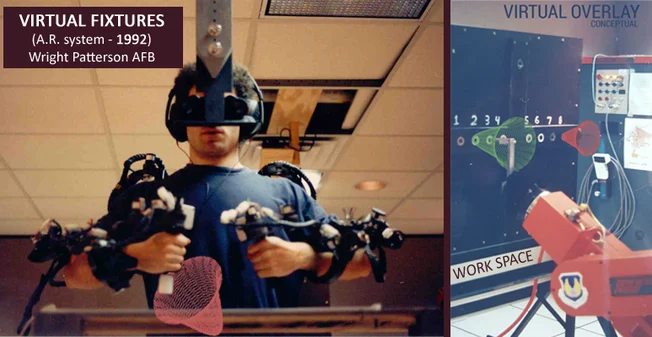

History of Augmented Reality
Early Conceptual Foundations (1500s-1800s)
Even before computers existed, the idea of altering reality with visual overlays appeared in early optical experiments.

1584 — Giambattista della Porta
Described optical illusions using glass panes. Considered one of the earliest conceptual ancestors of AR. This wasn't AR yet, but it planted the seed: modifying perception using visual augmentation.
Birth of AR Technology (1960s-1970s)
This is where real AR begins — with computer graphics and early head-mounted displays.

1968 — Ivan Sutherland's “Sword of Damocles”
The world's first head-mounted display
Displayed wireframe graphics over the real world
Required ceiling suspension due to weight
Widely recognized as the first true AR system
1968 — Ivan Sutherland's “Sword of Damocles”

Myron Krueger's Videoplace was a pioneering work in the field of artificial reality. It introduced the concept of unencumbered virtual reality and full-body participation in interactive art. The installation utilized projectors, video cameras, special purpose hardware, and onscreen silhouettes of the users to create an interactive environment. Users in separate rooms could interact with one another, and their movements were recorded and analyzed to create a sense of presence in the virtual reality. This work laid the groundwork for future developments in virtual and augmented reality.
Click here to know more in video
AR Becomes a Defined Field (1980s-1994s)
1990 — The term “Augmented Reality” is coined

In 1990, the term "augmented reality" was coined by Tom Caudell and David Mizzel at Boeing. This term was used to describe a project that utilized head-mounted displays to assist workers in an airplane factory by displaying wire bundle assembly schematics in a see-through HMD. The introduction of this term marked a significant milestone in the development of AR technology, which has since evolved into a diverse field with various applications and innovations.
1992 — Louis Rosenberg's Virtual Fixtures (US Air Force)

Louis Rosenberg's Virtual Fixtures, developed in 1992 at the USAF Armstrong Labs, is recognized as the first fully functional Augmented Reality (AR) system. This pioneering system utilized robotic arms and overlays to guide pilots, demonstrating the potential of immersive mixed reality in enhancing human performance in real-world tasks. The system's unique optics configuration allowed users to see robot arms in the place where their real arms should be, creating a spatially-registered immersive experience. Virtual Fixtures also employed computer-generated overlays to assist users in performing real physical tasks, significantly enhancing performance in dexterous tasks. The system's development was a pivotal moment in the history of AR and mixed reality, paving the way for future advancements in these fields.
1994 — AR in entertainment
In 1994, the first use of augmented reality in theater and performance art was demonstrated with the production "Dancing in Cyberspace." This groundbreaking performance featured acrobats engaging with virtual objects, showcasing AR's potential to enhance live performances and create immersive experiences. The production was a significant milestone in the evolution of AR, as it integrated AR technology into a theatrical setting, allowing for a new level of interaction and creativity.
Early stage of AR technology
AR Enters Consumer & Media Space (1998-2000s)
In 1998, Sportvision introduced the virtual yellow first-down line on NFL broadcasts,
marking one of the first significant uses of augmented reality in consumer sports media.

1998 — Sportvision's NFL “First-Down Line”
On September 27, 1998, during a Week 4 NFL game broadcast on ESPN between the Baltimore
Ravens and Cincinnati Bengals, Sportvision debuted the yellow first-down line,
instantly allowing fans to see the exact location required for a first down without
relying solely on announcers or on-screen statistics. This innovation revolutionized
the viewing experience by overlaying a semi-transparent yellow marker on the field that moved
seamlessly with the game action and camera perspectives
2000 — ARToolkit released (open-source)

ARToolkit provided a robust framework for marker-based augmented reality, which relies on fiducial markers (visual patterns) to overlay digital content onto the real world. Its release enabled developers to build standardized applications that could reliably detect, track, and render virtual objects on physical markers, facilitating the development of educational tools, games, and prototypes that relied on precise alignment of virtual and physical spaces.
2003-2009 — Early mobile AR

Early mobile AR First AR apps on PDAs and early smartphones Limited by weak processors and no depth sensors
The early years of mobile augmented reality (AR) saw significant developments, particularly in the use of personal digital assistants (PDAs) and early smartphones. However, these devices were limited by weak processors and the absence of depth sensors, which restricted the capabilities of AR applications. Despite these limitations, early AR apps on PDAs and smartphones laid the groundwork for future advancements in mobile AR technology.
Click here to know more in video
Modern AR Revolution (2010-2026)
first AR Google Glasses (2013)
Google Glass was first unveiled as a prototype in 2012 and became widely known to consumers with the Explorer Edition in 2013.
Marketed as a futuristic wearable, it combined a lightweight eyewear design with a small display in the upper right corner, allowing
users to access information, take photos, record videos, navigate, and receive notifications without a smartphone.
The device aimed to pioneer augmented reality (AR) experiences in everyday life.

Google Glass, introduced in 2013, failed as a mainstream consumer product but significantly shaped the development of future AR wearable technology.
Google Glass, unveiled in 2013, was a pioneering attempt to integrate augmented reality into everyday life
through a pair of glasses. Despite its innovative features and initial excitement, the product faced significant
challenges that led to its commercial failure. The high price point, awkward design, and privacy concerns were among
the key reasons that deterred consumers from adopting the device.Despite its commercial failure, Google Glass had a lasting
impact on the industry. It sparked discussions about privacy, AR technology, and the potential of wearable devices.
The lessons learned from Google Glass have influenced the development of future AR wearables, pushing the boundaries
of what is possible in the realm of augmented reality
Pokémon GO, released in 2016, became a global phenomenon, surpassing 1 billion downloads and demonstrating that augmented reality could achieve mass-market appeal.

Pokémon GO, developed by Niantic in collaboration with Nintendo and The Pokémon Company, leveraged AR technology to blend the digital world with real-world locations. By using smartphone GPS and camera features, players could catch virtual Pokémon superimposed on their real environment. Within months of its release, Pokémon GO achieved over 1 billion downloads worldwide, making it one of the most downloaded mobile games in history. Its accessibility on iOS and Android platforms allowed it to reach a broad demographic, from casual gamers to long-time Pokémon fans.
Click here to know more in video
In 2017, both ARKit and ARCore provided markerless AR with support for plane detection, light estimation, and motion tracking, but they differed in platform, tracking approach, and underlying technology.
ARKit (iOS 11, 2017): ARKit allowed markerless detection of horizontal planes, such as floors and tabletops, using the device's camera and motion sensors. Detected planes were represented as anchors that could host virtual objects, with support for real-time updates as the device moved.
Click here to know more in video
The introduction of LiDAR in iPhones in 2020 marked a major leap in mobile AR, enabling real-time depth mapping, improved spatial awareness, and better virtual object occlusion for AR applications.

Apple introduced the LiDAR (Light Detection and Ranging) scanner with the iPhone 12 Pro and iPhone 12 Pro Max in 2020. This sensor measures the time it takes for light to reflect off surfaces and return to the sensor,
creating precise depth maps of the surrounding environment. LiDAR complements the existing cameras and ARKit framework to enhance augmented reality experiences on mobile devices.
Click here to know more in video